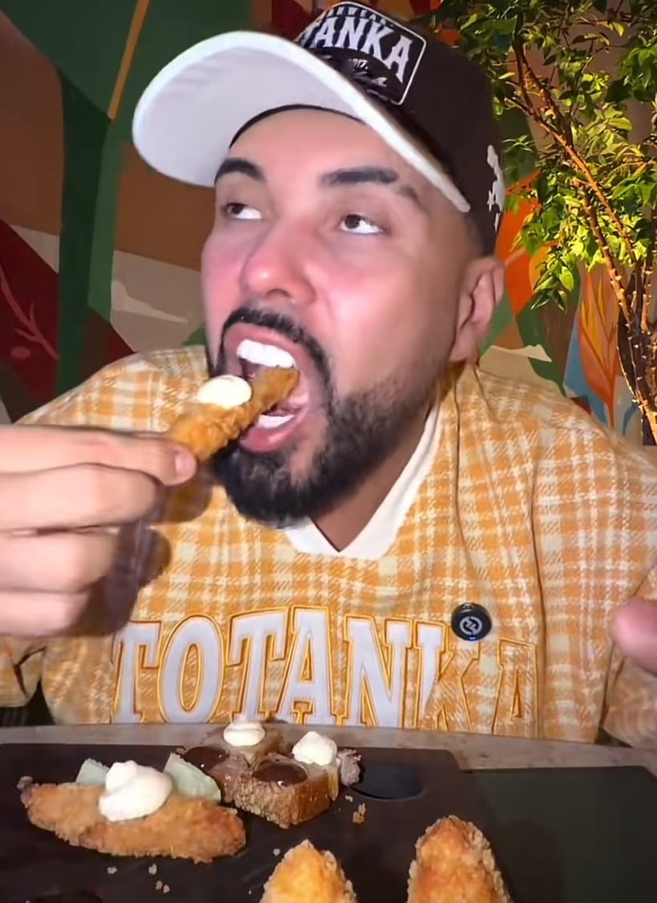
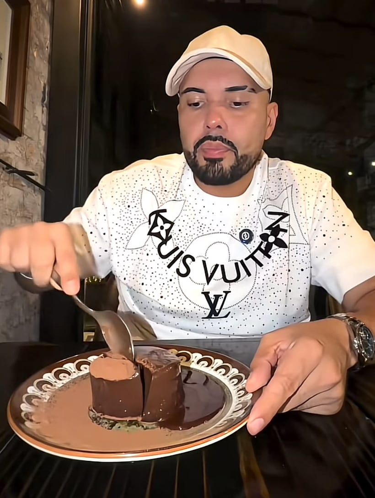

A pimenta do Tal do Du
São Paulo
- Caseirinha
- Mal criadinha
- Venenosinha
Três nomes pra mesma pimenta. Escolha o seu.
O Tal do Du
Eduardo de Lima Martins, mais conhecido como O Tal do Du, conquistou seu público mostrando onde comer em São Paulo. Nos vídeos, ele visita restaurantes, prova os pratos e compartilha suas impressões com o humor de quem tá indicando um lugar pra um amigo.
Entre uma garfada e outra, uma pergunta sobre a pimenta virou bordão: “Tem a caseirinha da casa?” A frase ganhou vida nas redes e virou parte da identidade do Du. Quem chega pelo meme encontra o que já fazia o público voltar: comida, dicas de lugares pra conhecer e o jeito descontraído dele de contar como foi a visita.
Explorando a Gastronomia em São Paulo



